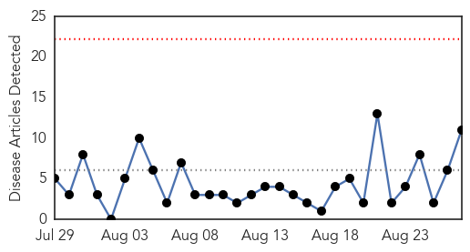

30 Day Trends
Web: 0 alerts, 0 warnings
Twitter: 0 alerts, 0 warnings
Top Articles:
- 0.910
- Despite Pockets of Resistance, Most U.S. Kids Getting Vaccinated
- 0.908
- Despite Pockets of Resistance, Most U.S. Kids Getting Vaccinated
- 0.901
- ANA Calls for RNs to Be Immunized Against Vaccine-Preventable Diseases -- Occupational Health & Safety
- 0.774
- Ohio vaccination rates for measles, mumps and rubella among highest in nation, CDC says
- 0.724
- Heed CMA call on vaccinations
- 0.704
- Pockets of Lower Vaccination Rates Remain Across the US
- 0.661
- U.S. vaccination rates high, but pockets of unvaccinated pose risk
- 0.660
- New York State's new age rules for school vaccinations begin Tuesday
- 0.647
- U.S. vaccination rates high, but pockets of unvaccinated pose risk
- 0.600
- Measles Mail Reminds B.C. Parents About Immunizations
- 0.548
- State exemption levels low, national vaccination rates high
Top Tweets:
-
No tweets found for Aug 27, 2015
Web/News Articles
Tweets

Article Locations

Article Confidences